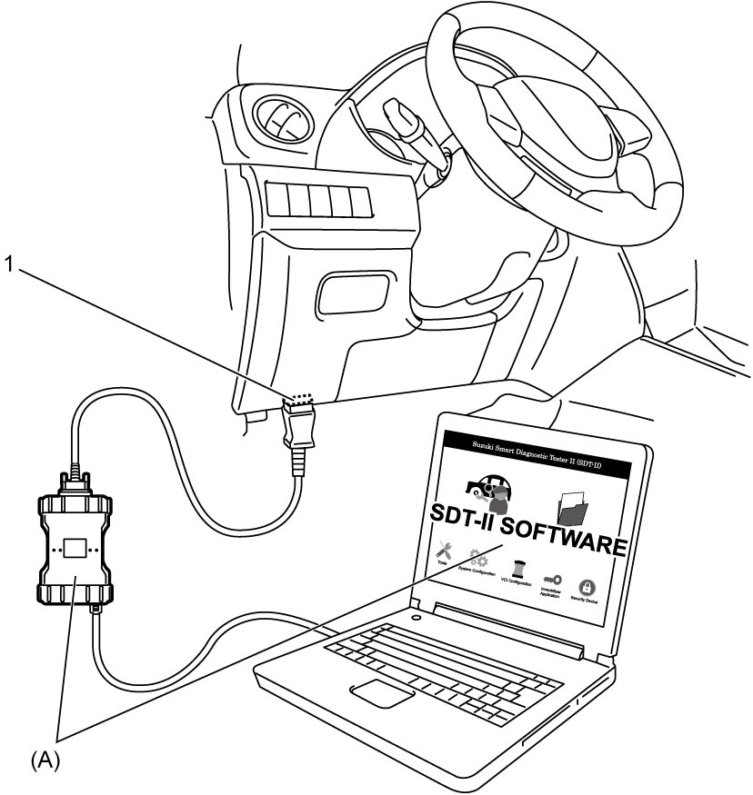

9B
| Headlight Auto Leveling System Initialization (LED Headlight Model) |
1)Bounce vehicle up and down several times to stabilize suspension.
2)Before headlight auto leveling system initialization, check the following points.
•Park vehicle on level surface.
•Adjust air pressure of all tires to specified value.
•Remove any load from vehicle.
•Turn lighting switch to “OFF” position.
•Adjust air pressure of all tires to specified value.
•Remove any load from vehicle.
•Turn lighting switch to “OFF” position.
3)Set ignition “OFF”.
4)Connect SUZUKI scan tool to DLC (1).

NOTE:
Utility item can be read by selecting “Headlight Auto Leveling” system on SUZUKI scan tool.

 "Expand image")
5)Set ignition “ON” and select menu “Height Sensor Initial Setting” under “Utility” mode on SUZUKI scan tool. Refer to Operator's Manual of SUZUKI scan tool for further details.